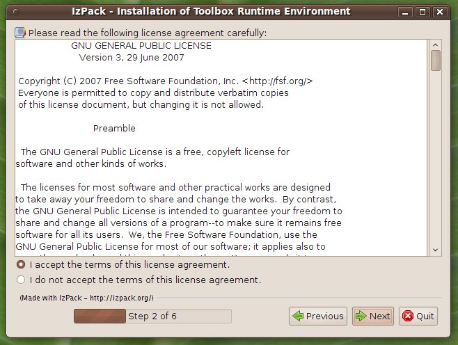
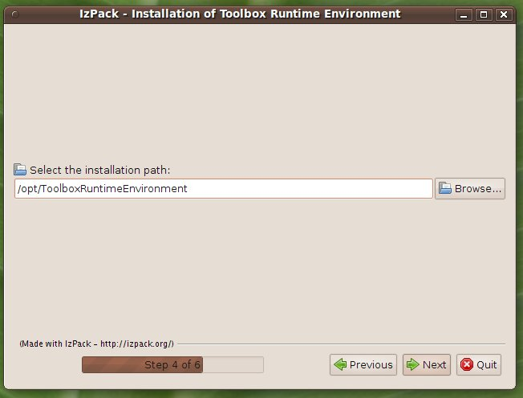

Installing TOOLBOX and Apache Tomcat
To install Toolbox and Apache Tomcat select the proper installer from the google code pages http://code.google.com/p/toolboxenvironment/.
Once downloaded, open a shell and type: java -jar <installer_name>.jar
The language selection panel should appear.
Select the language and then click on Ok.
The welcome panel should appear. Click on Next


Select the package to install and click on Next. The packages may all be mandatory and already pre-selected.

Select the installation path. Tomcat will be installed in such directory. Toolbox will be then deployed inside the installed Tomcat. Click on Next.

The installation process is started. The progress bar will provide feedback regarding the installation status.


Click on done to complete the installation.
If you want to execute the installed Tomcat as daemon (or service under windows) follows the stepse described here.